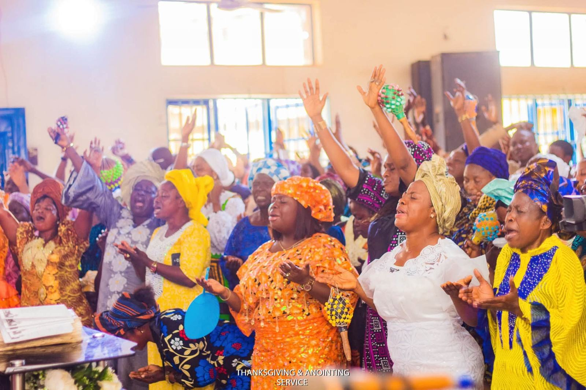
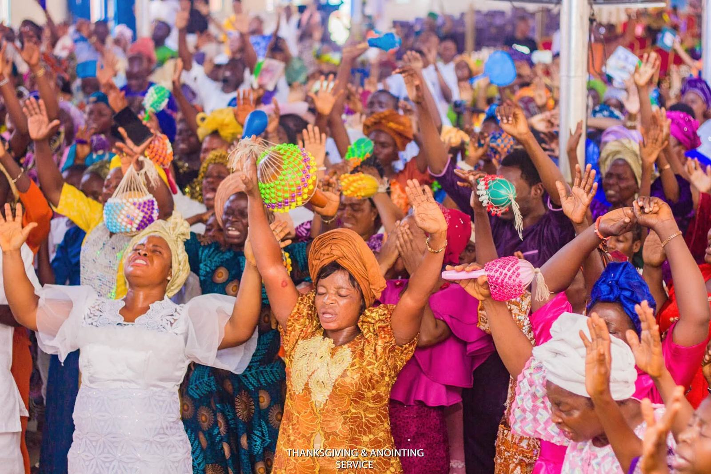
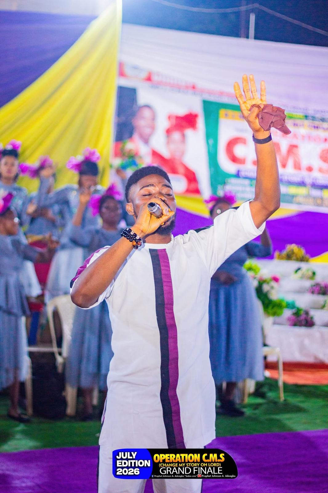

Welcome to Christ Beloved Evangelical Ministry
You are beloved.
A place of salvation, healing, deliverance and transformation.
Quarterly programme · Operation C.M.S
Change My Story, Oh Lord
A gathering for prayer, worship and the Word, with an emphasis on salvation, healing, deliverance and transformation, held every quarter.
The next edition begins in
00Days
00Hours
00Minutes
00Seconds
28–30 October 2026
Times and venue to be announced
Our leadership
Prophet Johnson Adeagbo & Pastor (Mrs.) Victoria Adeagbo
Prophet Johnson Adeagbo founded Christ Beloved Evangelical Ministry in obedience to a direction from God. Together with his wife, General Overseer Pastor (Mrs.) Victoria Adeagbo, he has nurtured and led the ministry from its beginning.
“Beloved, let us love one another: for love is of God.”
1 John 4:7

We intercede
Request prayer
Let's pray →
We're grateful
Share your testimony
Share with us →
Wherever you are